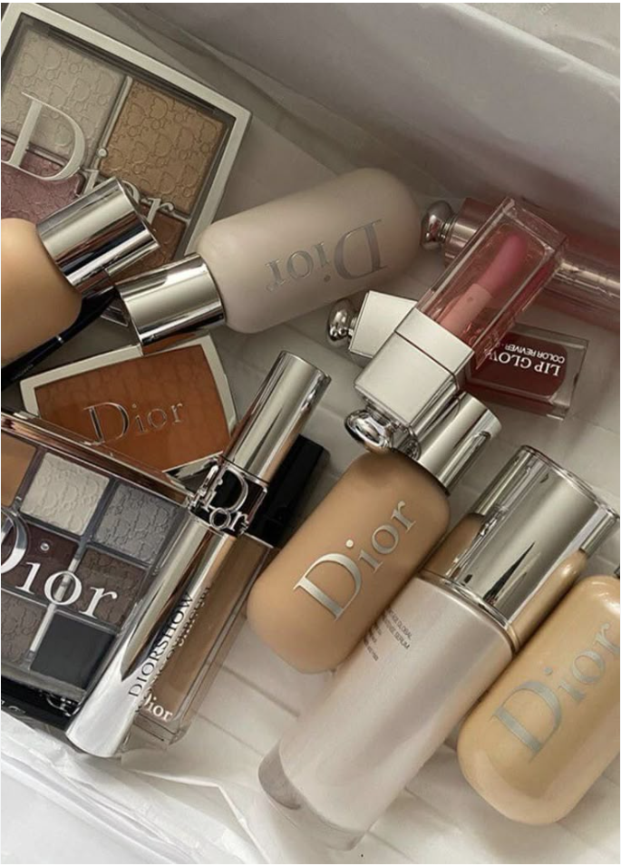

Universo da beleza
Curiosidades Dior Beauty
A maquiagem Dior combina beleza, elegância e sofisticação em produtos que podem fazer parte de diferentes estilos.
|
Produtos|
CuriosidadesUniverso da beleza
A maquiagem Dior combina beleza, elegância e sofisticação em produtos que podem fazer parte de diferentes estilos.

Beleza • Maquiagem Dior
Você sabia?
As bases ajudam a criar uma pele mais uniforme e podem ser usadas tanto em maquiagens leves quanto em produções mais elaboradas.
Mascara de cilios e produtos para sobrancelhas ajudam a destacar o olhar e deixar a maquiagem ainda mais marcante.
Iluminador, blush e lip oil podem trazer cor e brilho para a maquiagem, deixando o resultado mais sofisticado.